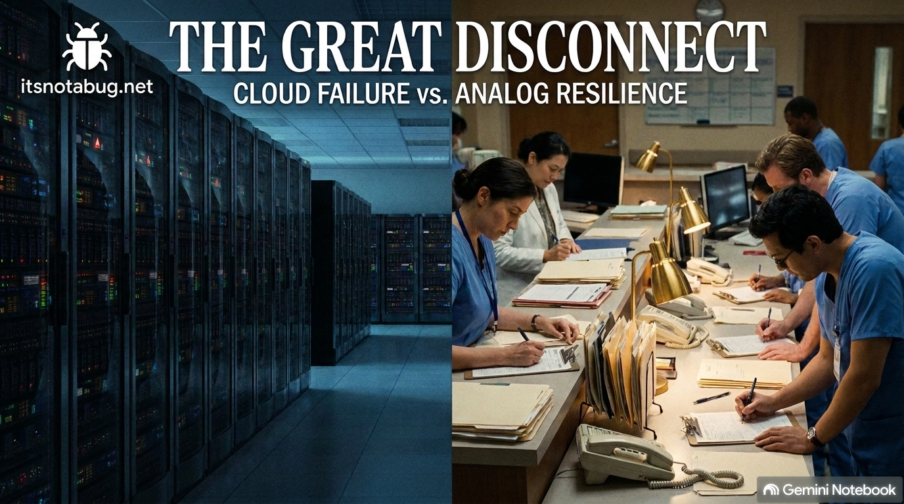

On the evening of November 12, 2026, a sudden silence descended upon workplaces across the globe. Team chat channels froze mid-sentence, shared calendars blanked out, and outgoing messages lingered indefinitely in outboxes. Within an hour of the first disruptions, outage monitoring platforms registered a historic surge in user reports that quickly swept across seventy-four countries and territories. In corporate offices, hospital wards, airport terminals, and government ministries, millions of professionals stared at unresponsive screens as the digital plumbing of the modern workplace abruptly stopped functioning.
The disruption was not an isolated software glitch. For more than twenty-four hours, Microsoft 365—the ubiquitous cloud productivity suite encompassing Exchange Online, Outlook, Microsoft Teams, SharePoint, and Copilot—suffered one of the most prolonged and economically damaging outages in its history. Beyond exposing the fragility of enterprise software, the incident served as an involuntary stress-test of global digital infrastructure, forcing business leaders, national regulators, and citizens to confront the mounting risks of single-vendor dependency and the sparked (again) debates over digital sovereignty.
1. The Day the Office Went Silent
The blackout unfolded during the evening peak in Europe and the middle of the workday across the Americas, before spreading rapidly to Asia and the Pacific. Tracking service Downdetector recorded more than 7,4 million incident reports worldwide, with report volumes peaking near 20 000 per minute—more than 1 500 times normal operational levels. Because Microsoft provides services to more than 450 million paid commercial subscribers globally, the failure acted as an immediate operational bottleneck for society's most critical institutions.
When electronic communications collapsed, organizations were forced into hasty retreats toward analog protocols and forgotten manual workflows:
-
Healthcare Services Under Attack
In the United Kingdom, National Health Service (NHS) hospitals, general practitioner surgeries, and pharmacies—operating under a national five-year enterprise agreement with Microsoft—lost access to email records and digital appointment scheduling. Medical staff reverted to physical clipboards, handwritten patient logs, and direct telephone calls to manage urgent cases, while patients faced warnings of widespread prescription fulfillment delays. -
Aviation and Transport Delays:
Airlines in India, including IndiGo and Akasa Air, saw their primary customer support channels and automated dispatch notifications paralyzed. Air India was forced to execute emergency manual rerouting of communications to prevent passenger disruptions, while freight and courier firms such as Japan’s Sagawa Express were left unable to process airport and railway station reservations. -
Courts and Public Administration:
n the United States, courts in Maine and municipal bodies across Florida and Colorado saw administrative routines grind to a halt. In Colorado, a local sheriff's office had to instruct residents to post bail in person because automated payment notifications relied on Outlook. In Manchester, an ongoing judicial proceeding saw jurors dismissed when internal case documentation could not be accessed, while the United States House of Representatives logged substantial internal communication hurdles. -
Financial Trading and Corporate Operations:
Financial trading firms in Taiwan, facing disruptions to portfolio management systems, took the extraordinary step of canceling bond repurchase agreements and confirming trades via analog fax machines. Corporate reporting across multiple industries was similarly thrown off course; electric vehicle manufacturer Workhorse Group postponed its quarterly earnings release, and Swiss luxury conglomerate Richemont experienced delays in its financial reporting. -
Secondary Artificial Intelligence Disruptions:
The shockwaves extended into adjacent technologies. Advanced AI research laboratories, including OpenAI and Anthropic, reported degraded performance across connectors and agent workflows that rely on Microsoft 365 data conduits to index corporate records.
As office workers across time zones coined the term "virtual snow day," the incident made clear that cloud infrastructure is not merely a corporate convenience; it has become foundational public infrastructure.
2. The Anatomy of a Metastable Failure
In the initial hours of the disruption, speculation ran rampant that the crash might be the work of hostile state-sponsored cyber warfare units or an unconstrained artificial intelligence model. These suspicions were heightened because Europe had spent the preceding weeks grappling with aggressive cyber sabotage directed against its food cold-chain infrastructure. However, official investigations by national cybersecurity agencies and Microsoft's engineering teams quickly eliminated foul play. The catastrophe was entirely self-inflicted—a structural failure born from an internal network configuration update.
Distributed computing specialists classify the incident as a classic metastable failure - a pathological condition where an engineering system enters a self-sustaining congestive loop that persists even after the initial error is rolled back. The breakdown unfolded through three distinct architectural stages:
-
The TLS Process Choke Point:
The instability originated during a network capacity upgrade within Microsoft’s Americas server infrastructure. A subsequent network configuration change triggered a fault within the Exchange Online process responsible for establishing secure, encrypted Transport Layer Security (TLS) connections. As authentication requests began stalling, the central processing units (CPUs) on the affected front-end servers became exhausted. -
The Paradox of Automated Resilience:
Modern hyperscale cloud data centers are designed with aggressive automated health checks. When a server stops responding to health probes, the orchestration software automatically concludes that the machine is defective and removes it from production rotation. In this case, healthy hardware was systematically pulled offline because of a software glitch. As hundreds of servers were decommissioned within minutes (despite being perfectly healthy), the remaining active servers were forced to take over the entire global workload, causing them to overload and fail in a rapid, domino-style cascade. -
The Self-Induced Retry Storm:
When Microsoft engineers recognized the problem, they halted ongoing deployments and attempted to roll back the configuration. Yet, every time a cluster of servers was rebooted and reintroduced into service, it crashed almost immediately. Millions of Outlook desktop clients, smartphones, and third-party API connectors that had lost connectivity were programmed to automatically reattempt their connections. Because establishing a new encrypted TLS handshake consumes substantially more processor cycles than maintaining an existing connection, newly revived servers were instantly crushed by a tsunami of reconnection attempts.
Engineering teams could not simply flip a master switch to restore service. Recovery required a painfully slow, manual triage: artificially restricting incoming connections, establishing isolated test environments, and gradually reintroducing traffic cluster by cluster.
3. The Highway Jam: Why Email Cannot "Fail Fast"
For millions of frustrated users, the most baffling aspect of the incident was why email services took nearly a full day to normalize after Teams and chat tools were reported functional. When modern web services or authentication platforms fail, they typically "fail fast." Like a locked front door, an unresponsive website bounces visitors immediately; users see an error code, and no further backlog accumulates. Once the door is unlocked, visitors walk in, and operations return to normal.
Electronic mail, by contrast, operates on an entirely different architectural foundation. Built on a decentralized **store-and-forward** design dating back to the foundational protocols of ARPANET, email is engineered never to discard a message simply because the destination cannot be reached.
"Email does not have a closed door. When a major provider goes down, external mail servers across the internet do not give up; they hold messages in outbound queues and continuously retry delivery."
To understand why recovery took so long, engineers compare email traffic to a multilane highway:
-
The Initial Crash:
When Microsoft’s Exchange Online servers stalled, it was the digital equivalent of a massive multi-vehicle collision shutting down all lanes of a highway. -
The Backlog Behind the Gate:
Senders on external platforms, such as Google’s Gmail or independent corporate servers, noticed nothing wrong when they pressed "send." Their providers accepted the messages, discovered that Microsoft's receiving servers were unreachable, and stored the mail in outbound queues. Senders did not receive bounce-back errors; instead, thousands of external servers across the internet kept checking the highway to see if lanes had opened. -
Clearing the Gridlock:
When Microsoft finally repaired its connection processes, it was equivalent to tow trucks clearing the physical wreckage. However, high-speed traffic could not immediately resume. The newly restored servers were instantly confronted with a crushing wall of millions of queued messages dating back twenty-four hours.
To prevent expiring messages from bouncing back to senders as undeliverable, Microsoft took the extraordinary step of expanding its internal email timeout window to forty-eight hours. Clearing this colossal backlog required hours of phased ingestion, resulting in messages arriving out of chronological order long after the core systems had stabilized.
4. The Single-Vendor Trap: The Real Cost of "The Bundle"
From a corporate purchasing perspective, consolidating workplace software into a single subscription bundle represents an almost irresistible proposition. Procuring email, instant messaging, cloud storage, spreadsheet collaboration, identity management, and generative artificial intelligence from a single technology vendor yields steep volume discounts, simplifies procurement, and guarantees that tools work together out of the box.
Yet, this commercial convenience conceals profound architectural fragility. As enterprise risk analysts observed, corporate IT leadership has historically priced suites like Microsoft 365 as an administrative license rather than treating them as an existential, single point of failure.
| Architectural Dimension | The Monolithic Cloud Bundle | Resilient Enterprise Architecture |
|---|---|---|
| Control Plane | Shared single control plane; failures cascade across email, chats, files, and AI | Modular, decoupled services with isolated operational controls |
| Identity & Authentication | Centralized identity directory linked directly to communications | ndependent identity fail-safes and out-of-band communication paths |
| Failure Behavior | Simultaneous, synchronized failure across core operational tools | Graceful degradation; loss of email does not disable live chat or file access |
| Cost Profile* | Lower upfront licensing fees; immense hidden downtime risk | Higher licensing and integration overhead; bounded operational blast radius |
| Vendor Migration | Severe vendor lock-in due to proprietary connectors and workflows | Standardized data formats, high data portability, and portable directory hooks |
The financial ramifications of this incident are staggering. Global credit rating agency Morningstar DBRS estimated that the outage would trigger global insured losses between **\$300 million and \$500 million**. While smaller than the estimated \$1.5 billion insured toll of the 2024 CrowdStrike software incident, this calculation accounts only for direct insurance claims. It excludes the billions of dollars lost to wasted employee hours, deferred contract signings, and unrecoverable productivity across mid-sized and small businesses.
Escaping this vulnerability is exceptionally difficult due to **vendor lock-in**. Migrating an enterprise encompassing thousands of employees, millions of historical compliance archives, automated security rules, and custom workflow connectors to a competing platform entails immense technical switching costs. Furthermore, running a completely duplicated, real-time mirror infrastructure across two competing cloud providers (such as maintaining live synchronizations between Microsoft 365 and Google Workspace) is financially prohibitive and introduces enormous administrative complexity.
When software suites are bundled together, organizations exchange the inconvenience of multi-vendor management for the systemic catastrophe of shared failure.
5. Digital Sovereignty and the Geopolitical Reality Check
Beyond corporate boardrooms, the 24-hour blackout reverberated across international capitals, transforming a routine IT failure into a high-stakes geopolitical incident. When government ministries across France, Belgium, Germany, and the Netherlands were forced to instruct citizens to communicate via telephone, the event stripped away any illusion that cloud services are politically or operationally neutral.
Industry analyst Dario Maisto of Forrester noted that the incident functioned as a *"quasi-natural experiment for stress testing an organisation's—and even an entire continent's—digital sovereignty posture."* For European policymakers, the blackout brought into sharp focus the continent’s systemic dependence on an oligopoly of American technology giants—chiefly Microsoft, Amazon Web Services, and Google Cloud.
This structural vulnerability has become an acute concern in European policy circles for several distinct reasons:
-
Interconnection as a Systemic Threat:
In its 2026 Threat Landscape analysis, the European Union Agency for Cybersecurity (ENISA) documented that digital interdependencies have become the primary threat vector facing European institutions. Examining more than 8,200 curated cybersecurity incidents, ENISA demonstrated that localized IT problems increasingly cascade across entire economic sectors because organizations share common upstream suppliers. A notable example cited by ENISA was a single ransomware incident at a Swedish municipal software provider that paralyzed the human resources, payroll, and sick-leave systems across roughly 200 local governments simultaneously. -
Regulatory Mandates for Third-Party Governance:
Europe’s regulatory framework has shifted decisively away from voluntary best practices toward enforceable accountability. Under the **NIS2 Directive** and the **Digital Operational Resilience Act (DORA)**, essential entities face severe regulatory penalties if they fail to actively govern supply-chain and cloud-concentration risks. These legal frameworks mandate that institutions audit upstream dependencies, enforce rapid incident reporting within 24 hours, and maintain tested continuity measures. -
The Quest for Strategic Autonomy:
Geopolitical tensions and shifting transatlantic priorities have amplified calls within the EU for true digital sovereignty. Many European authorities have begun evaluating open-source desktop ecosystems like LibreOffice and mandating that sensitive state data reside within locally hosted, jurisdictionally protected data centers.
Crucially, cybersecurity scholars emphasize that true digital sovereignty does not mean building digital automies or cutting ties with global hyperscalers, whose security investments and technical scale cannot be matched by individual nations. Instead, digital sovereignty demands strategic autonomy: preserving sufficient architectural modularity, data portability, and local survivability so that an engineering fault at a foreign tech provider can never paralyze national critical infrastructure.
6. A Playbook for Real Resilience: Surviving the Next Cloud Collapse
The central lesson of the November 2026 blackout is that cloud availability must never be conflated with organizational resilience. True business continuity does not depend on a cloud provider promising that an outage will never occur; it depends entirely on how well an organization can function while its primary systems are dark.
To insulate operations from the next inevitable hyperscale collapse, enterprise security leaders must replace wishful thinking with a concrete, tested resilience playbook:
6.1 Establish True Out-of-Band Communications
When email, team chats, and corporate directory servers sit within the same vendor ecosystem, an incident command team cannot coordinate recovery using standard tools. Organizations must maintain an independent, secondary communications platform (such as an encrypted external messaging network or an alternate email tenant) reserved exclusively for crisis response.
6.2. Ensure Offline Availability of Critical Playbooks
A common point of failure during major outages is that business continuity plans, emergency vendor contacts, and disaster recovery procedures are stored inside cloud repositories (such as SharePoint or OneDrive) that become unreachable when the control plane fails. Essential operational documentation and runbooks must be cached offline, cryptographically secured, and accessible on isolated local systems.
6.3. Pre-Define "Fail Open" vs. "Fail Closed" Security Logic
Modern enterprise suites bundle security controls directly into application workflows—such as Microsoft Defender Safe Links validating web addresses inside emails. During an outage, dependent security verification engines can stall. Security leadership must document in advance whether mission-critical operations should halt completely ("fail closed") or temporarily bypass non-essential validation filters to keep critical services running ("fail open").
4. Institute "Virtual Snow Day" Crisis Simulations
Just as industrial facilities conduct physical fire drills, modern enterprises must periodically disconnect their primary cloud productivity environments during scheduled simulations. Testing whether teams can execute payroll, confirm financial transactions, issue patient care instructions, and communicate with regulators without cloud connectivity is the only way to validate true organizational survival.
The 2026 Microsoft 365 blackout proved that the cloud is not always available and utouchable sanctuary; it is physical hardware, vulnerable software code, and shared networking cables subject to human error and engineering limits. In an economy where downtime equals immediate societal paralysis, organizations that treat their digital dependencies as unquestioned utilities will remain perpetually vulnerable. True resilience lies in recognizing that while technology will inevitably fail, the ability to operate through the failure remains entirely within human control.
Sources
- What to know about Microsoft's outage and why it takes so long to restore email services
- Microsoft struggles to get M365 services back online after widespread outage
- Microsoft 365 outage ends after over 24 hours; Outlook, Teams restored as company says 'underlying issue' addressed
- A global Microsoft 365 outage has hit millions – what happened and when will it be fixed?
- Microsoft restores service to Outlook and Teams after global outage
- expert reaction to Microsoft outage
- How the Microsoft outage will affect businesses—and their budgets
- Microsoft outage exposes risks of growing reliance on big tech providers
- ENISA 2026: Digital Dependencies Widen Europe's Attack Surface
- Mandatory Cyber Incident Reporting Arrives in 2026: What It Means for Businesses and How to Prepare
We secure small business workflows and office infrastructure across Flanders. We configure Microsoft 365 tenant protection, automated backups, and anti-phishing safeguards.